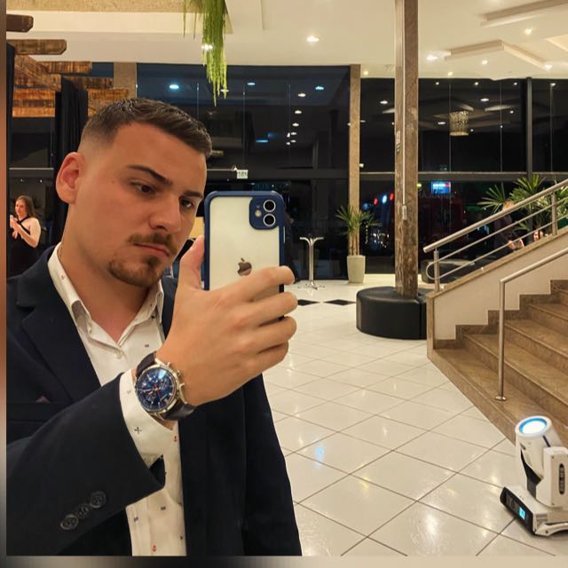

Desenvolvedor Frontend | Criador de Soluções Inovadoras | Empresário
Sou um desenvolvedor frontend apaixonado por criar experiências web incríveis. Com formação em Engenharia da Computação, tenho experiência em projetos que vão desde aplicativos pessoais até sistemas corporativos.
Busco sempre aprender novas tecnologias e colaborar em equipes dinâmicas que valorizem a inovação e a criatividade.
Planejar, organizar, controlar e assessorar as organizações nas áreas de recursos humanos, patrimônio, materiais, informações, financeira, tecnológica, entre outras; implementar programas e projetos; elaborar planejamento organizacional; promover estudos de racionalização e controlar o desempenho organizacional.
Alguns projetos e trabalhos já desenvolvidos.